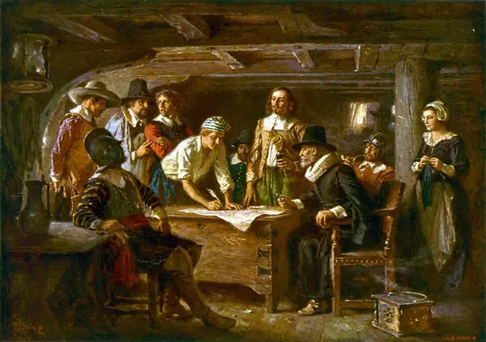
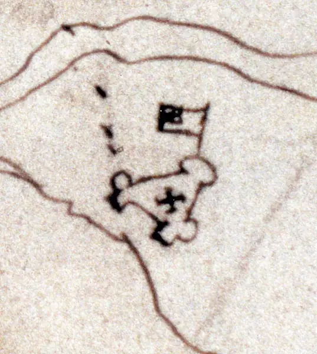
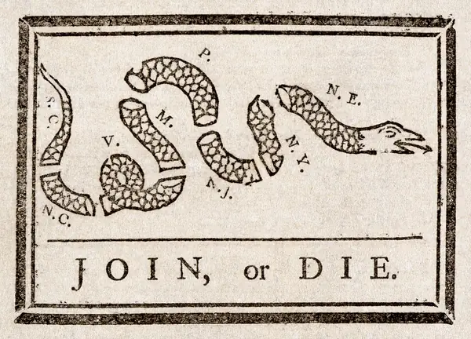

A company, a covenant and a cartoon: how thirteen colonies began.
Reveal the meaning of each word, then say it back in your own words. (Which of these eight belong to a story about leaving home, and which to a story about governing a new place?)
Read each part. After it, answer the quick check from memory first, then reveal, then discuss.

In 1607 English settlers landed on a marshy bank of the James River in Virginia and began to build a fort. They were not sent by a king in search of glory; they were employed by the Virginia Company, which had received a royal charter and hoped to make a profit. While the leaders argued about who was in command, the settlers were dying of disease and hunger, and in the “starving time” of 1609–10 most of them perished.
The colony survived because it eventually found a crop that sold: tobacco. In 1619 the first assembly of elected representatives met in Virginia — and in the same year the first enslaved Africans recorded in English Virginia arrived. Self-government and slavery were born in the same place within weeks of each other, and American Studies scholars have been asking ever since how the two belong in one story.
1. Why was Jamestown founded, and who sent the settlers?
2. What two things happened in Virginia in 1619?
1. For profit: the settlers were employed by the Virginia Company, which held a royal charter.
2. The first elected assembly met, and the first enslaved Africans recorded in English Virginia arrived.
In 1620 the Mayflower reached the coast of Massachusetts, far to the north of the land its passengers had been licensed to settle. The Pilgrims, who had left England for the Netherlands to worship freely and then decided to leave again, realised that they had no legal authority where they had landed. Before anyone went ashore, forty-one men signed the Mayflower Compact, agreeing to obey whatever laws the settlement made. The first winter was an ordeal, and about half the settlers died.
A far larger migration followed. In 1630 the Puritan leader John Winthrop, sailing for Massachusetts Bay, told his fellow passengers that their community would be “as a city upon a hill”, watched by the whole world. The phrase has been quoted by American presidents ever since, though what it means — a model to be admired, or a promise to be kept — remains disputed.
1. Why did the Mayflower Compact become necessary?
2. What did Winthrop say the new community would be, and why does it still matter?
1. Because the ship landed outside the area its passengers had a licence to settle, so they had no legal authority; they agreed to make their own laws.
2. “A city upon a hill”: a community watched by the world. Presidents still quote it, and its meaning is disputed.

By the middle of the eighteenth century there were thirteen British colonies, from New Hampshire to Georgia, each with its own government, its own interests and its own suspicion of its neighbours. A religious revival known as the Great Awakening had swept through many of them, and the memory of the Salem witch trials of 1692 lingered as a warning of what fear and certainty can do to a community.
In 1754 war began with France, and Benjamin Franklin published a cartoon in his newspaper showing a snake cut into pieces, each labelled with a colony or region, above the words “Join, or Die”. The colonies did not unite then. But the image had a long future: when the quarrel was with Britain a decade later, protesters brought it out again.
1. What did Franklin’s cartoon argue, and in what year?
2. Why might the cartoon have been reused against Britain later?
1. That the colonies had to unite to survive; 1754, the start of the war with France.
2. Because it was already a famous symbol of colonial unity, so it could easily be turned against a new opponent.
A good historical story needs three kinds of past. The past simple moves the story forward, the past continuous paints the scene behind it, and the past perfect goes back to what had already happened.
Put the verb in brackets into the past simple or past continuous. Say each sentence aloud.
1. While the settlers (build) the fort, a fever (spread) through the camp.
2. A ship (sail) towards Virginia when a storm (drive) it off course.
3. In 1630 Winthrop (speak) to his fellow passengers while their ship (cross) the Atlantic.
4. Franklin (print) the cartoon in his newspaper in 1754.
1. were building … spread (the long action, then the event)
2. was sailing … drove (an action interrupted)
3. spoke … was crossing (the event, then the background)
4. printed (a finished event, so past simple)
Use the past perfect for the earlier action. Sentence 1 is a model; complete the other three yourself.
1. By the time the Mayflower reached land, the passengers (spend) more than two months at sea.
2. The Pilgrims (already / live) in the Netherlands before they decided to cross the Atlantic.
3. When the new colonists arrived, most of the first settlers (die) of hunger.
4. By 1754 the colonies (grow) so large that uniting them seemed impossible.
1. had spent
2. had already lived
3. had died
4. had grown
Each gap needs a different decision — scene, event, or earlier event. The word in italics gives you a clue.
1. The assembly met in 1619, twelve years after the settlers (land) in Virginia. (earlier)
2. While Winthrop (preach), the passengers (watch) the horizon. (background + background)
3. The settlers (survive) because they (find) a profitable crop. (event, then earlier)
4. Because the company (not / plan) for winter, the colonists (suffer) terribly. (earlier, then event)
1. had landed
2. was preaching … were watching
3. survived … had found
4. had not planned … suffered
Hold on to this: simple for what happened, continuous for what was going on around it, perfect for what had happened before.
1. From the first lecture: what is the difference between a definition and a hedge? Give one example of each.
2. Name two scholars or books of the myth and symbol school, and say what they read as keys to American culture.
1. A definition says what something is (A canon is a list of works accepted as the most important); a hedge softens a claim so it is defensible (It is arguably the most important).
2. For example Henry Nash Smith’s Virgin Land or Leo Marx’s The Machine in the Garden; they read recurring images like the frontier, the garden and the American Adam as keys to national culture.
Pick two of these cards and speak about each for at least a minute.
Write a four-sentence account of the first winter at Plymouth, using past simple, past continuous and past perfect once each.
From memory, with nothing in front of you:
Think about it: Which part of the story did you remember most easily, and what helped — the pictures, the dates, or telling it aloud?
Images from Wikimedia Commons: The Mayflower Compact 1620 cph.3g07155 (Jean Leon Gerome Ferris, Public domain); Jamestownzuniga (Unknown (rediscovered by Alexander Brown), Public domain); Benjamin Franklin - Join or Die (Benjamin Franklin, Public domain).